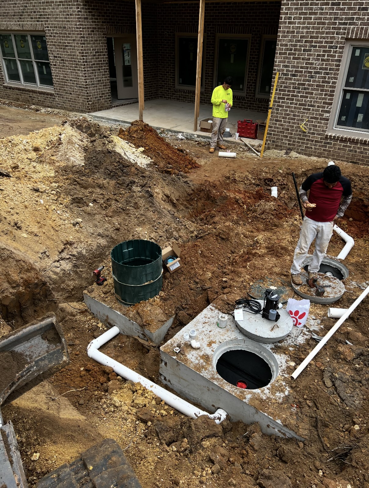
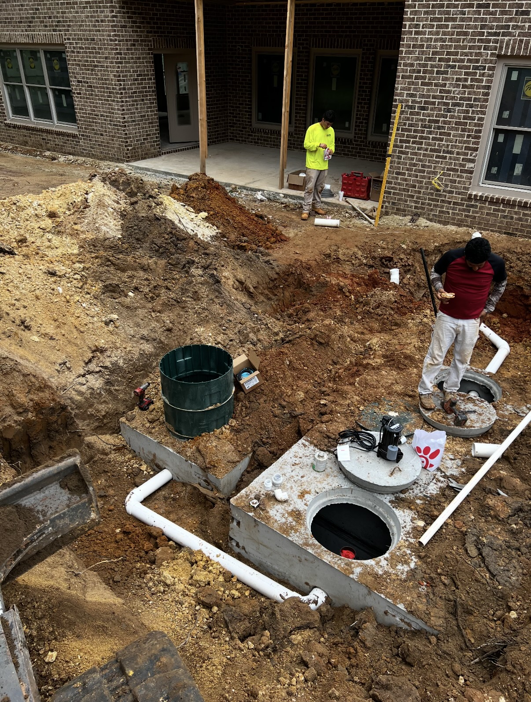

We deliver reliable, code-compliant septic system installations built for Georgia’s unique soil and terrain—from Atlanta to the North Georgia mountains. Managing the entire process, from site evaluation to final placement, we ensure your system is installed correctly, efficiently, and built to last. Using high-quality materials, modern equipment, and proven installation methods, we provide dependable septic solutions for both new homes and system replacements.

 
